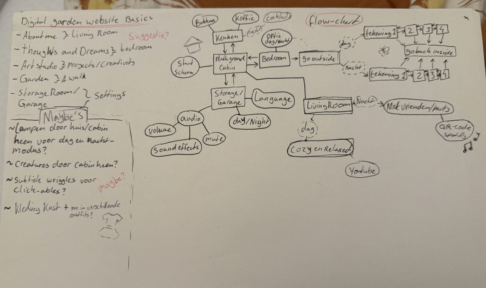
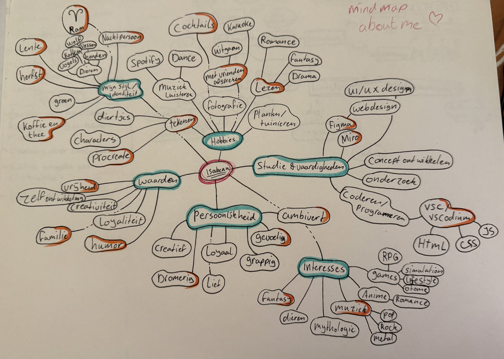
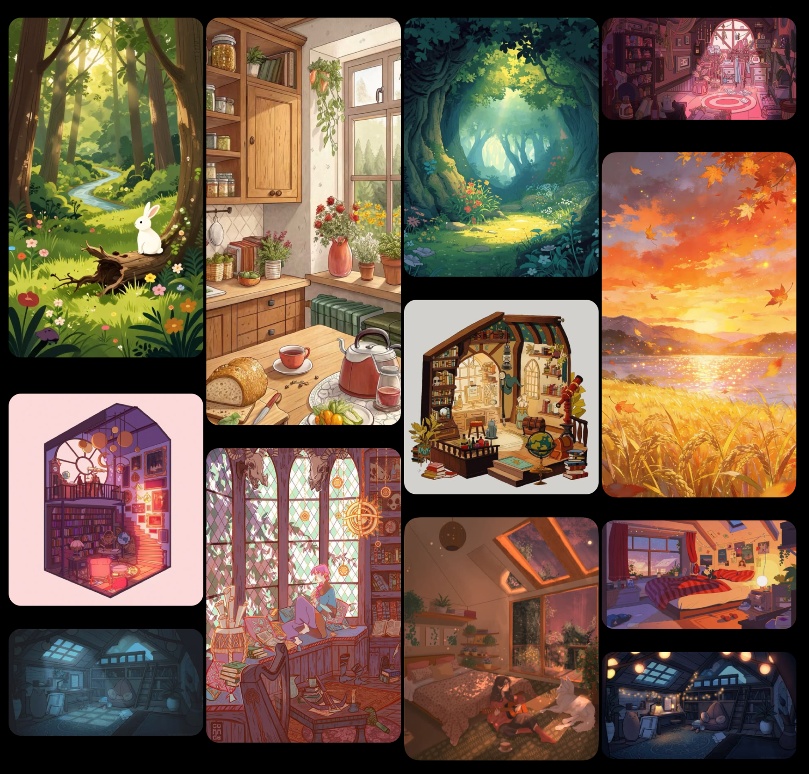
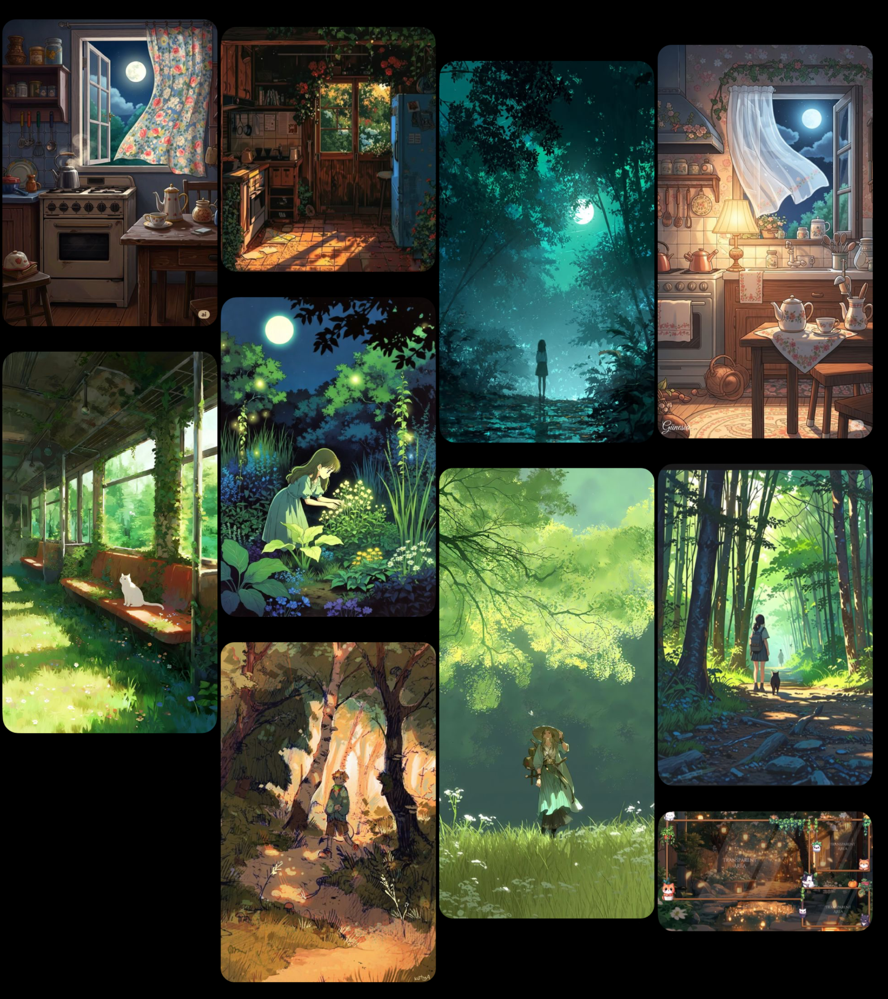
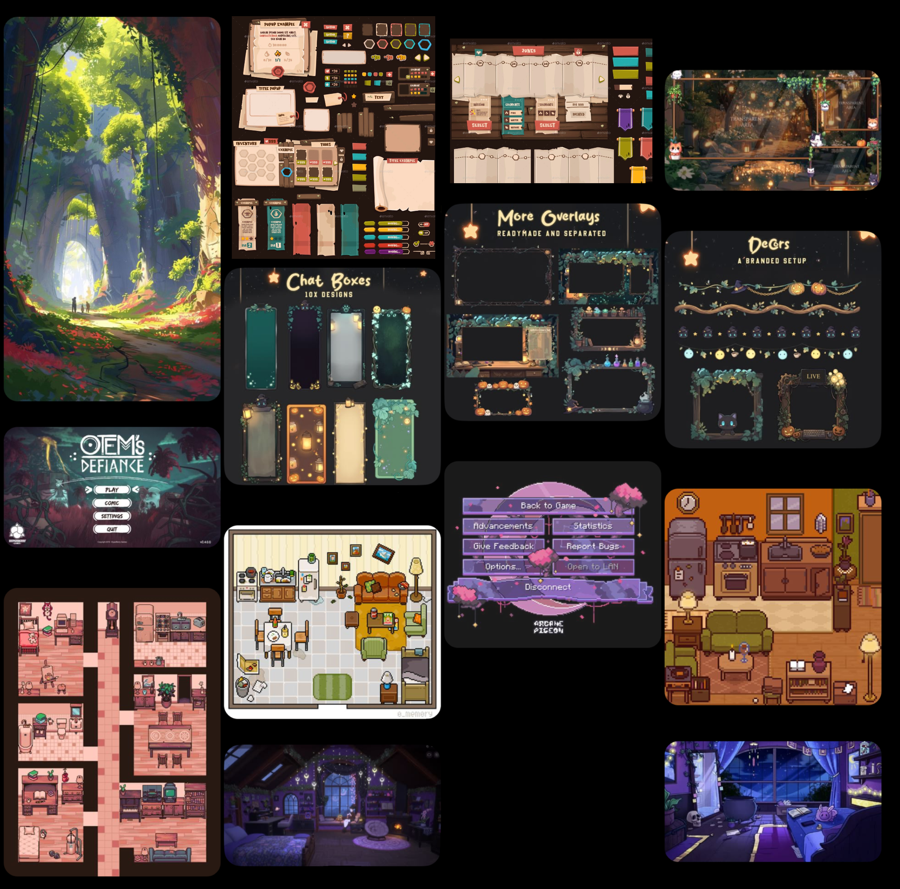
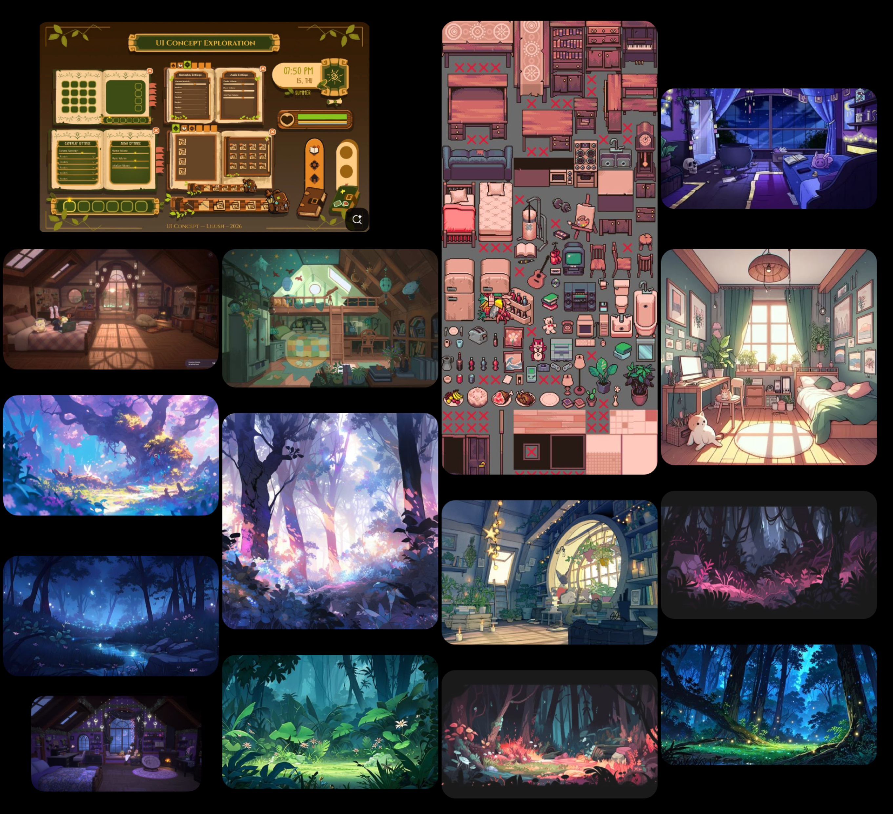
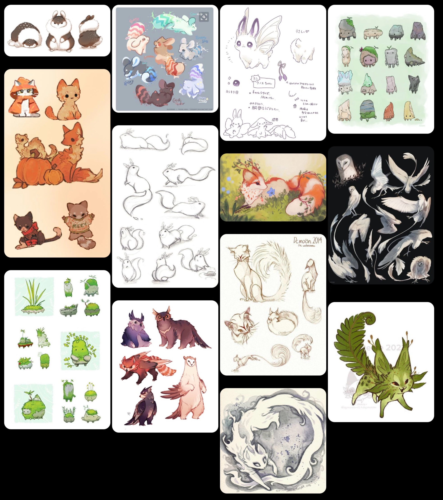
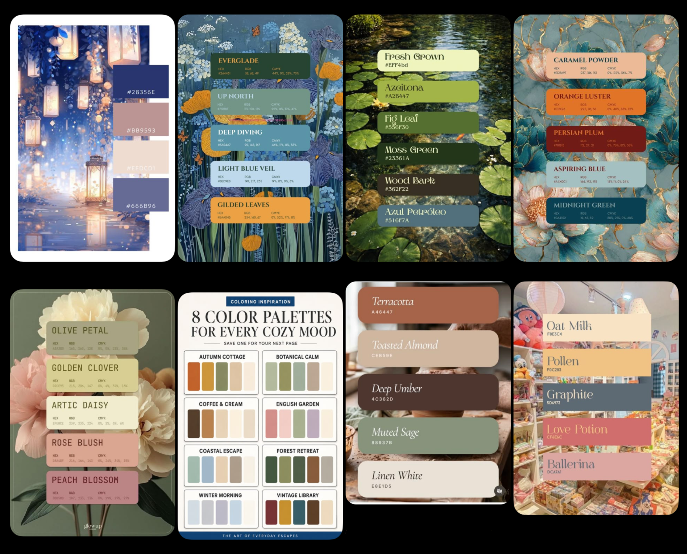
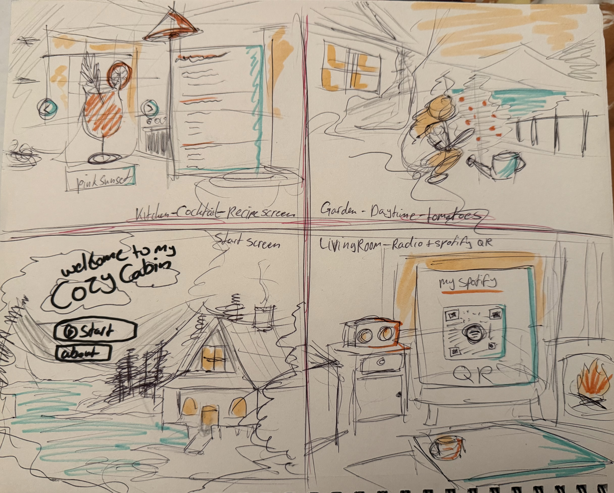

class: center, middle <!-- In deze textarea kan je in Markdown de slides aanpassen, zie https://github.com/gnab/remark/wiki voor alle mogelijkheden! --> # 🌸Inspiratie voor de digital garden van Isabeau <3🌸 oooooh shiiiiii- --- # 🌸Inhoud🌸 ### 1. Onderwerp / idee ### 2. 10 links ### 3. 50+ inspiratie foto's voor visuals ### 4. introtekst --- # 🌸Onderwerp & doel 🌸 <section style="display: flex;"> <div style="text-align: justify;"> <p></p> </div> <div style="text-align:justify;"> <p></p> </div> </section> --- # 🌸10 links🌸 #### Welke 10 links heb ik gelezen, geraadpleegd ter inspiratie, verdieping? #### Voor de basics van een point-and-click functie. - https://medium.com/gamedev-101/tutorial-creating-an-html5-adventure-game-part-2-a6ecbdf57e08 #### Basics voor Websites - https://youtu.be/ZOI7Tq5Zq2s?si=g5hhQg8z6qTk_uOf (hyperlink) - https://www.w3schools.com/css/css_position.asp (Positie van img op pagina) - https://arielsalminen.com/contact/ (inspo voor hoe 'contact' eruit moet zien) - https://youtu.be/0tY7Z53QJo8?si=JWEVNH72cl98IPes (extra informatie over Digital Gardes) #### Voor tekenen - https://youtu.be/4oTtWa9KR2c?si=ERlWwRxdeJQV-J7- (landschap) - https://youtu.be/SIvRcXRaPkg?si=gBuTuo3cnajZ5loI (landschap) - https://youtu.be/iZhYIxWFjgw?si=3tf6eB6pDV9Vg3_u (landschap) - https://youtu.be/AmSlD4B2v28?si=9aM84iCgsIKka5dL (creatures design tips) - https://youtu.be/OzemCeywKOM?si=_c8iCmbq7piYnVwi (Digital Art ESSENTIALS) --- # 🌸Inspiratie Visuals🌸 --- # 🌸Backgrounds / layers🌸 --- <div style="text-align: center;"> <p></p> </div> --- <div style="text-align: center;"> <p></p> </div> --- <div style="text-align: center;"> <p></p> </div> --- <div style="text-align: center;"> <p></p> </div> --- #🌸Creatures🌸 <div style="text-align: center;"> <p></p> </div> --- #🌸Pallet🌸 <div style="text-align: center;"> <p></p> </div> --- # 🌸Concept!🌸 <div style="text-align: center;"> <p></p> </div> --- # 🌸Introtekst🌸 <section style="display: flex-center; font-weight: 800;"> Welcome to my little corner of the web! Explore my creations, projects passions and imagination that makes me... me! </section> # 🌸🌸🌸🌸🌸🌸🌸🌸🌸 <!-- Laat onderstaande staan anders breekt je presentatie -->